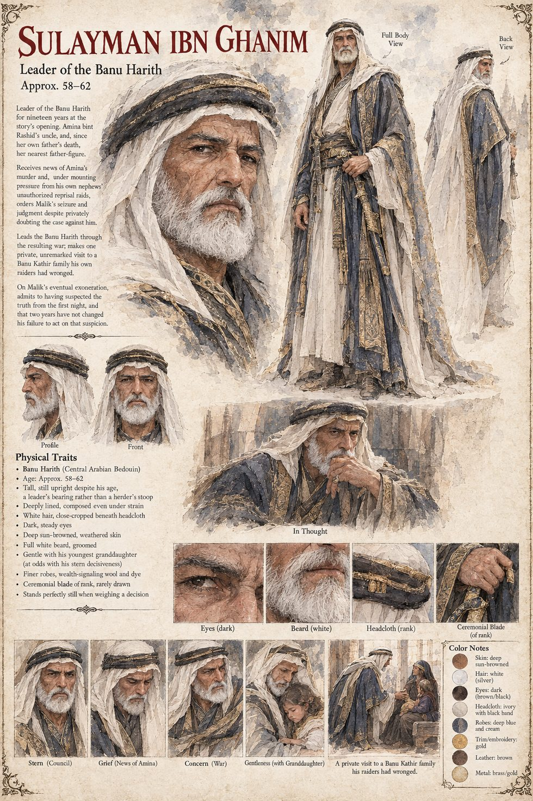

Sulayman ibn Ghanim
Leader of the Banu Harith for nineteen years · Amina's uncle, her father's own brother · orders Malik's seizure while doubting the case · about fifty-eight to sixty-two by his sheet
Leader of the Banu Harith for nineteen years, a steadiness never tested by anything larger than a bad drought until the morning the news of Amina's death arrives. He is her father's own brother and, since her father died the winter before her wedding, the nearest thing to a father she had left. He receives the news the way he receives all news that matters, standing perfectly still for as long as it takes the messenger to finish speaking and a good while longer; those who know him have never seen him age so visibly in so short a span. He leads by making the hard decision first and explaining it, if pressed, once and briefly. Away from his councils, the younger members who answer to him know him mostly for spoiling his youngest granddaughter with a patience he never showed his own sons.
He decides alone, in a tent where he will not let anyone light a fire, while Malik sits bound in the heat. He finds the case thinner than his advisors need it to be: a divorced husband is an obvious suspect, and obvious suspects are wrong at least as often as they are right. He turns the evidence over in the dark and cannot find a version of events that does not require him to send men to kill a shepherd on the strength of a grudge no one can prove he acted on. By the second day three of his own nephews, who loved their cousin and wanted someone to be sorry, have ridden out on their own authority to seize a Banu Kathir well in reprisal. He rides out after them alone and brings them back, with a threat he would later say was the only one he ever made that he was not entirely certain he could carry out. It is this, more than any theory of justice, that narrows his choices: men carrying his own name are already moving whether he judges the case or not. On the fourth sleepless night he understands that the Banu Harith can survive being wrong about who killed her, and cannot survive being seen to do nothing. He gives the order.
Through the war that follows he makes one private visit, the only one in two years: to a Banu Harith family whose season's stored grain the Banu Kathir have burned in reprisal, a household that had taken no side until that night, and he says nothing to anyone about the fact that its youngest granddaughter is almost exactly the age of his own. When word of Malik's release, and the reason for it, reaches him he is silent a long while, and then says only, I suspected it. The first night. I have had two years to decide that changes nothing, and I have failed at that decision every day since. It changes, the manuscript says, absolutely nothing about the three hundred lives already spent believing otherwise.
The sheet draws him tall and upright despite his years, a leader's bearing rather than a herder's stoop, deeply lined and composed under strain, with close-cropped white hair beneath an ivory headcloth with a black band, a full groomed white beard, dark steady eyes and deep sun-browned skin, in finer wool robes in deep blue and cream with gold embroidery and a ceremonial blade of rank he rarely draws; its panels show him stern in council, grieving at the news of Amina, concerned in the war and gentle with a small granddaughter. The manuscript gives no age or appearance, so the age band and every visual detail are the sheet's. One panel and one line of the sheet's text place his private visit with a Banu Kathir family his raiders had wronged. The manuscript's family is a Banu Harith family whose grain the Banu Kathir burned, and this entry follows the manuscript.